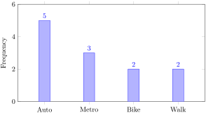

Suppose 12 students report the number of siblings they have: 0, 1, 1, 1, 2, 2, 2, 3, 3, 3, 4, 4. The dot plot in Figure 2.2.2 stacks one dot for each student above the corresponding number of siblings.
Section 2.2 Graphs for Displaying Data
Graphs are often faster to read than tables because they turn numerical information into shape and height. Different graphs are useful for different kinds of data. A dot plot works well for small sets of discrete numerical data. A bar chart is good for comparing categories. A stem-and-leaf plot keeps the original data values visible. A histogram and a frequency polygon are especially useful for grouped quantitative data.
Example 2.2.1. A Dot Plot of Siblings.
A dot plot is compact and honest. It shows every observation while still making the distribution easy to read. For small data sets, that is a nice combination.
For categorical data, a bar chart is usually the better choice. The categories are placed on one axis, and the height of each bar shows its frequency or relative frequency.

The bar chart in Figure 2.2.3 shows the same information as Table 2.1.2, but now the comparisons are visual. We can tell right away that auto is the most common category and that bike and walk are tied.
Example 2.2.4. A Stem-and-Leaf Plot.
Consider these quiz scores: 72, 74, 76, 78, 80, 81, 83, 83, 85, 88, 91, 94. A stem-and-leaf plot separates each score into a stem and a leaf. In this case the tens digits are stems and the ones digits are leaves, as shown in Table 2.2.5.
| Stem | Leaves |
|---|---|
| 7 | 2, 4, 6, 8 |
| 8 | 0, 1, 3, 3, 5, 8 |
| 9 | 1, 4 |
The key idea is that the plot still contains the original data values. For example, the leaf 3 on stem 8 represents a score of 83. A stem-and-leaf plot is handy when the data set is not too large and you want both a picture and the exact values.
When the data is grouped into intervals, a histogram is often the natural graph. The bars in a histogram touch because the intervals sit next to each other on a number line. The histogram in Figure 2.2.6 uses the grouped wait-time data from Table 2.1.4.

A frequency polygon is built from the same grouped data, but instead of bars we plot the class midpoints against the frequencies and join the points with line segments. This is especially helpful when we want to compare shapes or place more than one distribution on the same set of axes.
![A line graph formed by connecting the points at midpoints 1, 3, 5, 7, and 9 with frequencies 6, 14, 18, 9, and 3, together with zero-frequency endpoints at -1 and 11.The horizontal axis is labeled Wait time in minutes and the vertical axis is labeled Frequency. A polyline starts at the point (-1,0), rises to (1,6), then to (3,14), peaks at (5,18), drops to (7,9), then to (9,3), and returns to (11,0). The highest point occurs at the midpoint 5, corresponding to the interval from 4 to 6 minutes. The two endpoints lie one class width beyond the first and last class midpoints.](generated/latex-image/fig-frequency-polygon-wait-time-2.svg)
Each graph has its own job. The trick is not to memorize names blindly, but to match the graph to the kind of data you have and the question you want to answer.